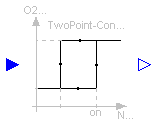
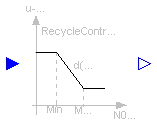

This package provides a collection of "conrollers" that are needed for the complex wastewater treatment plant example.
Main Author: Gerald Reichl Technische Universitaet Ilmenau Faculty of Informatics and Automation Department Dynamics and Simulation of ecological Systems P.O. Box 10 05 65 98684 Ilmenau Germany email: gerald.reichl@tu-ilmenau.de Copyright (C) 2000 - 2003, Gerald Reichl
The Modelica package is free software; it can be redistributed and/or modified under the terms of the Modelica license, see the license conditions and the accompanying disclaimer in the documentation of package Modelica in file "Modelica/package.mo".

This is an on-off (two-point) controller with hysteresis. The hysteresis is the difference beetween the parameter on and off. When the input signal exceeds the "on" value, the output signal is "out_on" and when the input signal drops below the "off" value, the output signal is "out_off".
| Name | Default | Description |
|---|---|---|
| on | 1.0 | |
| off | 0.0 | |
| out_on | 1.0 | |
| out_off | 0.0 |
model TwoPoint "On-Off controller with hysteresis"
//Two-point controller
parameter Real on=1.0;
parameter Real off=0.0;
parameter Real out_on=1.0;
parameter Real out_off=0.0;
Boolean mode;
Modelica.Blocks.Interfaces.InPort e(final n=1);
Modelica.Blocks.Interfaces.OutPort u(final n=1);
algorithm
// 0: Controller is off
// 1: Controller is on
when initial() then
mode := if e.signal[1] >= on then true else false;
end when;
when e.signal[1] >= on and mode == false then
mode := true;
end when;
when e.signal[1] <= off and mode == true then
mode := false;
end when;
u.signal[1] := if mode == true then out_on else out_off;
end TwoPoint;
Input signal is a flow measurement. Output is a control signal between -1 and 1. This component is only used for the complex plant example. Therefore no further documentation.
| Name | Default | Description |
|---|---|---|
| Qmin | 500 | minimal allowed return acticated sludge (RAS) flow [m3/h] |
| Qdry | 1200 | flow until dry weather is assumed [m3/h] |
| Qrain | 1500 | maximum RAS flow during rain situation [m3/h] |
| Qmax | 2520 | maximum flow the treatment plant can handle [m3/h] |
| RAS_ratio | 120 | RAS/Inflow ratio during dry weather [%] |
model ReturnController "Return Sludge Controller"
parameter Real Qmin=500 "Minimum RAS flow [m3/h]";
parameter Real Qdry=1200
"Dry weather inflow until RAS is ratio dependent [m3/h]";
parameter Real Qrain=1500 "Maximum RAS flow during rain situation [m3/h]";
parameter Real Qmax=2520 "Maximum wastewater flow to WWTP [m3/h]";
parameter Real RAS_ratio=120 "RAS/Inflow ratio [%]";
Real u1;
Real u2;
Real u3;
Modelica.Blocks.Interfaces.InPort in1(final n=1);
Modelica.Blocks.Interfaces.OutPort out(final n=1);
equation
u1 = Qmin;
u2 = in1.signal[1]/24*RAS_ratio/100;
u3 = Qdry*RAS_ratio/100 + (Qrain - Qdry*RAS_ratio/100)/(Qmax - Qdry)*(in1.
signal[1]/24 - Qdry);
out.signal[1] = 2*min(max(u1, u2), u3)/Qmax - 1;
end ReturnController;

Input signal is a nitrate measurement, output is a control signal between -1 and 1 and is calculated in two discrete steps between NO3max and NO3min. This component is only used for the complex plant example. Therefore no further documentation.
| Name | Default | Description |
|---|---|---|
| NO3max | 2.0 | [mg/l] |
| NO3min | 1.0 | [mg/l] |
| Pref | 70 | Reference pumppower between NO3max and NO3min [%] |
| dNO3max | 30 | Reduction of the ref. pumppower at NO3-max by x [%] |
| dNO3min | 30 | Increase of the ref. pumppower at NO3-min by x [%] |
model RecycleController1 "Recycle Sludge Controller1"
parameter Real NO3max=2.0 "[mg/l]";
parameter Real NO3min=1.0 "[mg/l]";
parameter Real Pref=70 "Reference pumppower between NO3max and NO3min [%]";
parameter Real dNO3max=30 "Reduction of the ref. pumppower at
NO3-max by x [%]";
parameter Real dNO3min=30 "Increase of the ref. pumppower at NO3-min
by x [%]";
Real u1;
Real u2;
Real u3;
Modelica.Blocks.Interfaces.InPort in1(final n=1);
Modelica.Blocks.Interfaces.OutPort out(final n=1);
equation
//red = Pp*dNO3max/100;
//[%]
//inc = Pp*dNO3min/100;
//[%]
u1 = 2*(Pref + dNO3min)/100 - 1;
u2 = 2*Pref/100 - 1;
u3 = 2*(Pref - dNO3max)/100 - 1;
out.signal[1] = if in1.signal[1] < NO3min then u1 else if in1.signal[1] <
NO3max then u2 else u3;
end RecycleController1;

Input signal is a Nitrate measurement
Output is a control signal between -1 and 1
and is linear interpolated between NO3min and NO3 max.
This component is only used for the complex plant example.
Therefore no further documentation.
| Name | Default | Description |
|---|---|---|
| NO3max | 2.0 | [mg/l] |
| NO3min | 1.0 | [mg/l] |
| Pref | 70 | Reference pumppower between NO3max and NO3min [%] |
| dNO3max | 30 | Reduction of the ref. pumppower at NO3-max by x [%] |
| dNO3min | 30 | Increase of the ref. pumppower at NO3-min by x [%] |
model RecycleController2 "Recycle Sludge Controller2"
parameter Real NO3max=2.0 "[mg/l]";
parameter Real NO3min=1.0 "[mg/l]";
parameter Real Pref=70 "Reference pumppower between NO3max and NO3min [%]";
parameter Real dNO3max=30 "Reduction of the ref. pumppower at
NO3-max by x [%]";
parameter Real dNO3min=30 "Increase of the ref. pumppower at NO3-min
by x [%]";
Real u1;
Real u2;
Real u3;
Modelica.Blocks.Interfaces.InPort in1(final n=1);
Modelica.Blocks.Interfaces.OutPort out(final n=1);
equation
//red = Pp*dNO3max/100;
//[%]
//inc = Pp*dNO3min/100;
//[%]
u1 = 2*(Pref + dNO3min)/100 - 1;
//u2 = 2*Pref/100 - 1;
u2 = 2*((Pref + dNO3min)/100 - ((dNO3max + dNO3min)/100)/(NO3max - NO3min)*(
in1.signal[1] - NO3min)) - 1;
u3 = 2*(Pref - dNO3max)/100 - 1;
out.signal[1] = if in1.signal[1] < NO3min then u1 else if in1.signal[1] <
NO3max then u2 else u3;
end RecycleController2;